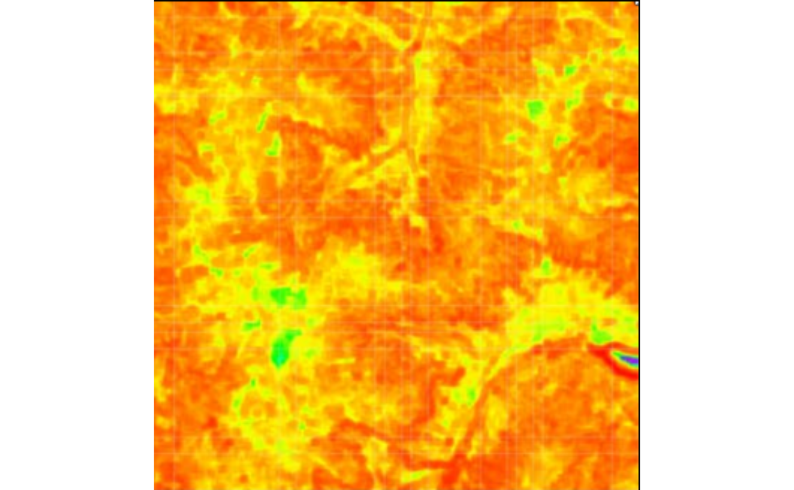
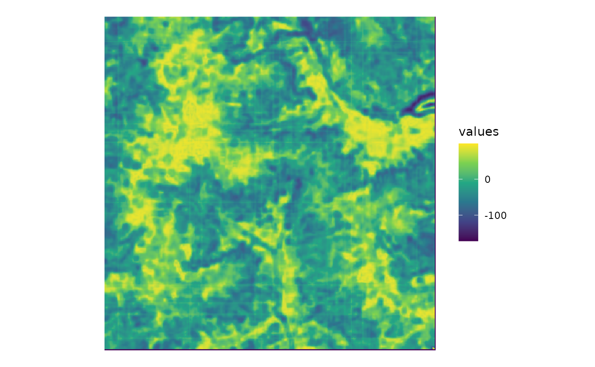
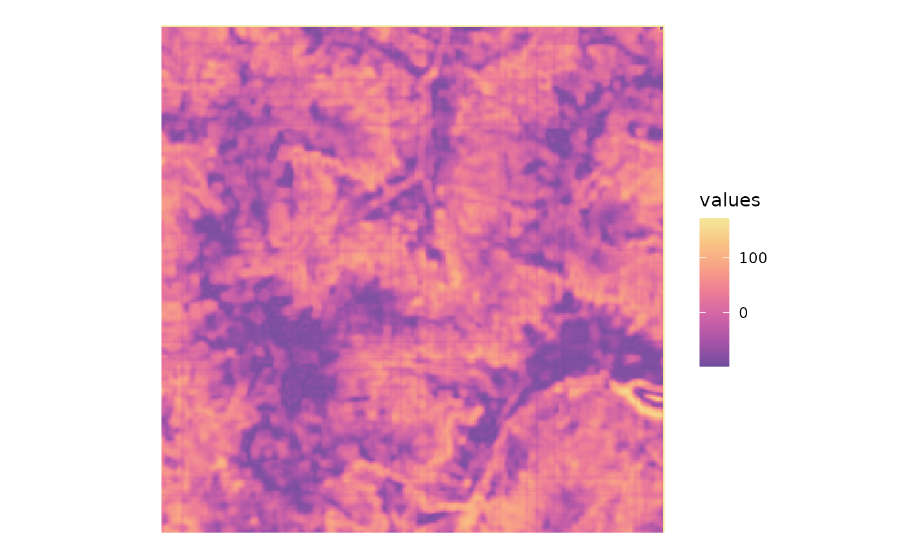
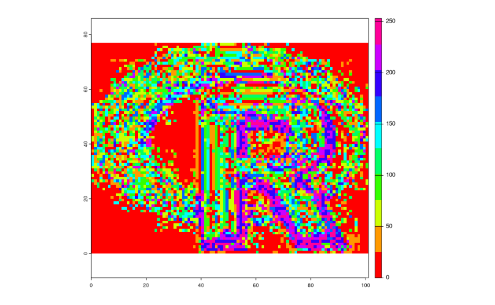
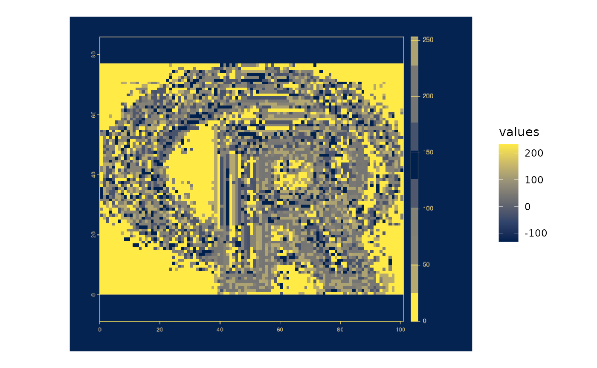
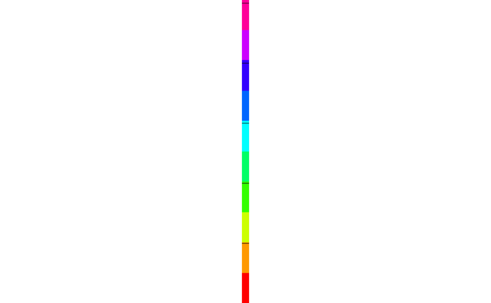
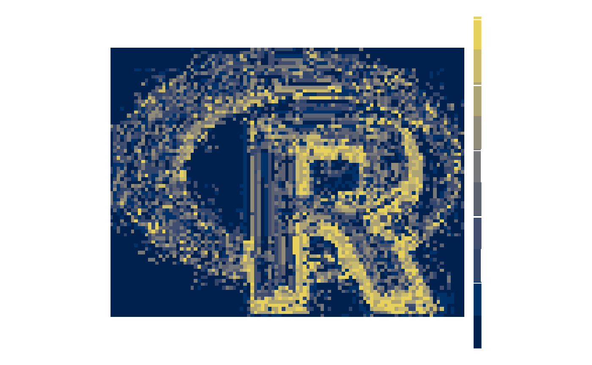
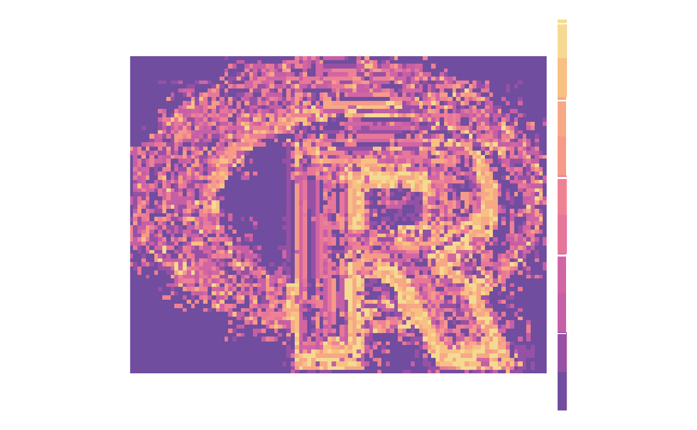

cblindplot_workflows.RmdThe goal of the cblindplot package is to provide a simple way to convert exisitng non-colorblind plots and maps into colorblind-friendly plots and maps.
library(cblindplot)The first workflow is to use the cblind.plot() function directly on a raster object or file path. It works well when the original color palette of the input object is sequential.
Let’s start by reading an example image with a non-colorblind-friendly palette and visualize it.
my_image <- system.file("pic/imager.png", package = "cblindplot")
suppressWarnings(my_image_terra <- terra::rast(my_image))
terra::plotRGB(my_image_terra)
To update its color palette, we can use the cblind.plot function and provide a color vision deficiency (CVD) type. In this case, the cblind.plot() function will take the original image in RGB, extract its first principal component, and then apply a new color palette to the transformed single-band image.
cblind.plot(my_image, cvd = "deuteranopia")
Alternatively, we can provide a custom color palette to the cvd argument.
my_palette <- hcl.colors(7, palette = "Sunset")
cblind.plot(my_image, cvd = my_palette)
The above approach, however, does not work well when the original color palette of the input object is more complex (e.g., diverging). You can see it by running the following code.
my_image2 <- system.file("pic/rainbowr.png", package = "cblindplot")
suppressWarnings(my_image_terra2 <- terra::rast(my_image2))
terra::plotRGB(my_image_terra2)
cblind.plot(my_image2)
Here, both low and high values are mapped to the same dark color and it is impossible to distinguish them.
The second workflow also uses the cblind.plot() function but it requires to provide an image of the color legend as well.
my_legend <- system.file("pic/legendr.png", package = "cblindplot")
suppressWarnings(my_terra_legend <- terra::rast(my_legend))
terra::plotRGB(my_terra_legend)
In this case, the order of the colors in the legend are used to update the color palette of the input object.
cblind.plot(my_image2, legend = my_legend)
Here, we can also customize the color palette by providing a custom color palette to the cvd argument.
my_palette <- hcl.colors(7, palette = "Sunset")
cblind.plot(my_image2, cvd = my_palette, legend = my_legend)